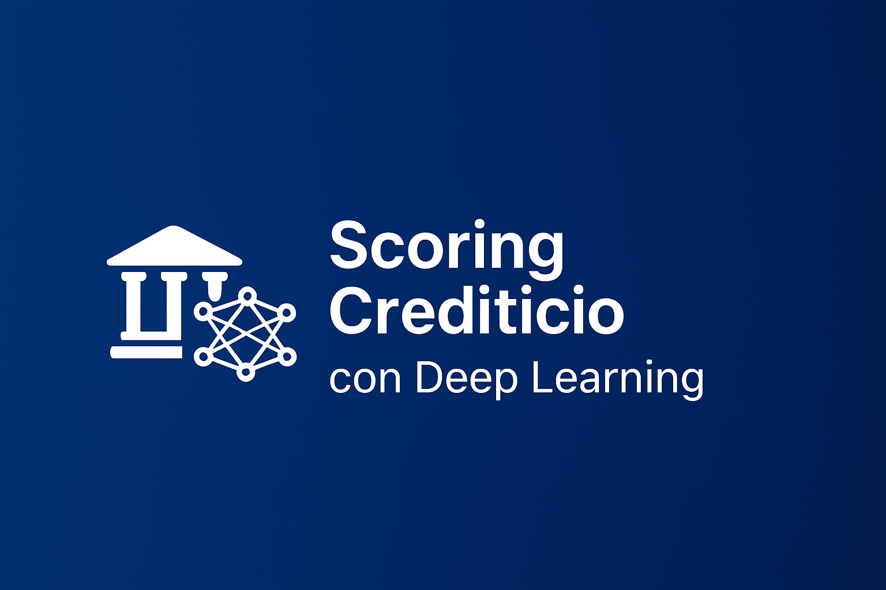

Scoring Crediticio con Deep Learning Explicable
Caso de uso
Las instituciones financieras enfrentan el desafío de evaluar el riesgo crediticio de clientes de forma precisa, asegurando al mismo tiempo la transparencia en las decisiones automatizadas. El reto fue diseñar un sistema que combinara alta precisión con explicabilidad.
Solución
Se desarrolló un modelo de Deep Learning para predecir el riesgo crediticio de clientes en base a sus datos históricos y transaccionales. Se incorporaron técnicas de interpretabilidad como SHAP y LIME, que permiten a analistas comprender el peso de cada variable en la decisión del modelo.
Resultados